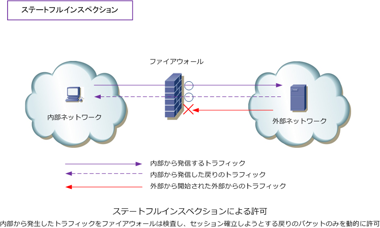
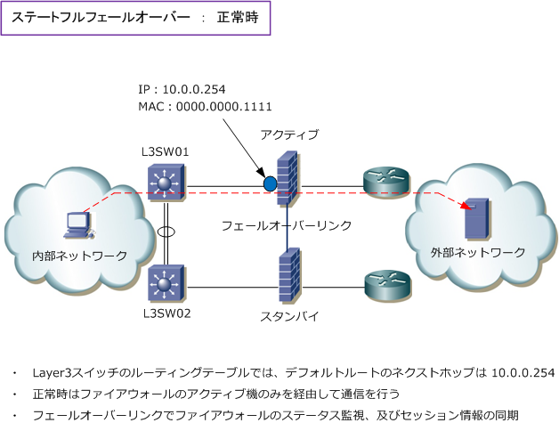
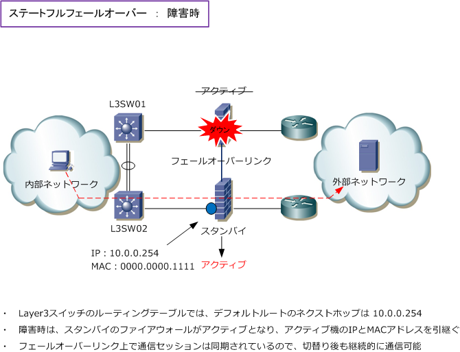

Stateful Packet Inspection / Stateful Failover
ファイアウォールの基本機能
ファイアウォール製品には、ステートフルインスペクションとステートフルフェールオーバーと呼ばれる ファイアウォールとしての2つの基本機能が備わっています。以降ではこれら2つの基本機能を解説します。 ※ ステートフルインスペクションは、ステートフル パケット インスペクション（ SPI ）とも呼ばれる。
ステートフルインスペクション
ステートフルインスペクションとは、ファイアウォールを通過するパケットの中身を見て、動的にポートを 開放したり、閉鎖したりする機能のことです。このステートフルインスペクションではLAN側から送信した データをセッションログとして一時的に保存しておき、WAN（インターネット）側から到着したパケットが セッションログと整合性が合うかどうかを確認して、整合性があう場合は開放、矛盾する場合は閉鎖します。

一般的に、このステートフルインスペクションはLAN側（内部）から発信したトラフィックは、その戻りの トラフィックを動的に許可させ、WAN側から開始される着信トラフィックは拒否するという実装で使用する 機能です。ステートフルインスペクションは、多くのセキュリティ製品でデフォルトで有効になっています。
ステートフルフェールオーバー
ステートフルフェールオーバーとは、ファイアウォールで保持している通信セッションの情報を、冗長化 したバックアップのファイアウォールに引き継つぐことができる機能のことです。この機能により、主系 のファイアウォールに障害が発生した場合でも、副系のファイアウォールで通信を継続することができる。
ステートフルフェールオーバーを実装させるために、冗長化を構成する2台のファイアウォール同士を フェールオーバーケーブルで接続します。このフェールオーバーケーブルは、ファイアウォール製品に よって異なり、専用ケーブルまたはLANケーブルを使用します。フェールオーバーケーブルで接続した ファイアウォール間のリンクはフェールオーバーリンクと言い、このリンクでFWの正常性を確認します。

冗長化されたファイアウォールにはアクティブとスタンバイの役割を持ちます。正常時はアクティブの ファイアウォールがパケット転送の処理を行い、アクティブ機からスタンバイ機へ通信のセッション情報 が継続的に同期されます。同期される通信セッション情報には、例えばTCPセッション、UDPセッション NAT変換テーブル、ARPテーブルなどがあります。
アクティブ機にハードウェア障害やインターフェース障害が発生した場合、その情報はフェールオーバー リンク上で伝えられて、スタンバイ機がアクティブ機に昇格します。このタイミングで本来アクティブ機 であったファイアウォールのIPアドレスとMACアドレスは、スタンバイ機に引き継がれることになります。 また、新たにアクティブ機になったファイアウォールには既存の通信セッション情報が引き継がれている のでクライアント側は継続的な通信を行うことができます。※ 本内容はFW製品により動作は異なります。
